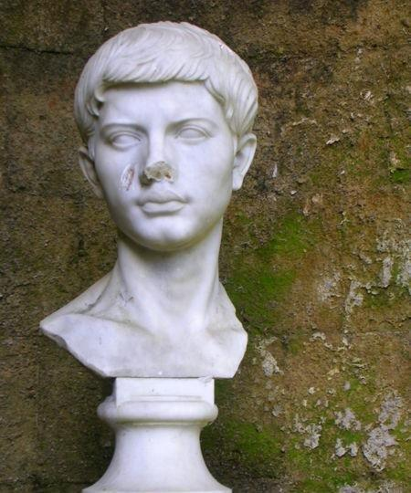
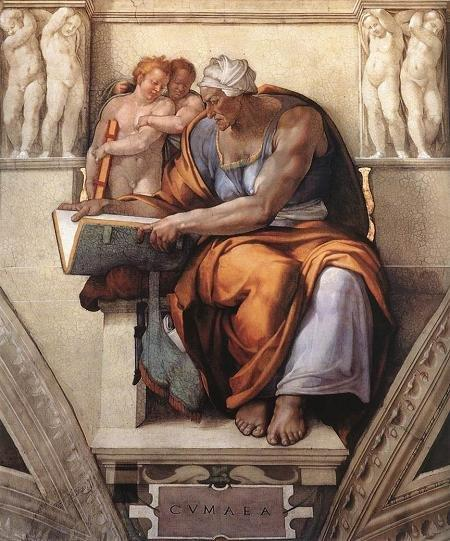

An Ode
Ode
From the MS at Towneley Hall, page 41
Tune - MélodieUnknown, replaced John Clark
Sequenced by Christian Souchon
|
To the text:  The quotation put in as an epigraph to this ode refers to Virgil (70 - 19 BC)'s famous Fourth Eclogue, printed below. It is one of the 10 poems, modeled on the poetry of the Greek Theocritus, that develop and vary pastoral topics by which the author expresses his various perceptions of the changes in contemporary life and thought. The fourth Eclogue is addressed to Asinius Pollio and uses, as do many Jacobite songs, the imagery of the Golden Age, a perfect world, affluent and leasured, to come in the foreseeable future and announced in connection with the birth of a Child.Who the Child in this Messianic Ecloque is has been highly contested: Pollio's son, Antony and Cleopatra's son, Julius Caesar's spiritual heir Octavian, etc. The figure early proved convenient as a link between Roman authority and Christianity. The connection was first made by Eusebius of Caesarea and medieval scholars who held Virgil's work in high regard, highlighted similarities between the eclogue's themes and Isaiah 11.6: "A little child shall lead". They made of Virgil a prophet of sorts. The Cumean Sibyl mentioned in the poem became the most prominent of the four sibyls (painted by Michelangelo in the Sistine Ceiling). In the present Ode the child is not Jesus-Christ, but the Jacobite messianic hero, Charles Edward Stuart, whose noble behaviour and martial achievements are rated as supernatural... Speaking of prophets, since an ancient book of prophecies announced that the Scots would gain a great victory at Gladsmuir, the battle of Prestonpans is renamed in the present poem "Battle of Gladsmuir" though both plains are over a mile away from each other, to tally with this prediction. |
A propos du texte:  La citation qui figure en exergue de cette Ode est tirée de la fameuse 4ème Bucolique de Virgile (70 - 19 avant J.C.), reproduite ci-après. C'est l'un des 10 poèmes imités du poète hellénique Théocrite, où, par des variations sur des sujets pastoraux, l'auteur exprime divers aspects de sa vision d'une époque où les mœurs et les mentalités étaient en pleine mutation. Cette 4ème églogue s'adresse à Asinius Pollio et utilise toute une imagerie chère aux Jacobites, celle de l'Âge d'Or, d'abondance et de loisirs, dont l'avènement, tout proche, est annoncé par la naissance d'un enfant.L'identité de l'enfant de cette églogue messianique a donné lieu à bien des controverses: était-il le fils de Pollio, celui d'Antoine et Cléopâtre, l'héritier spirituel de César, Octave, etc.? Cette figure s'avéra très tôt constituer un lien commode entre l'autorité romaine et le christianisme. Le premier à faire ce rapprochement fut Eusèbe de Césarée. Puis la scholastique médiévale qui tenait l'oeuvre de Virgile en haute estime, souligna les similitudes entre les thèmes de l'Eglogue et Isaïe 11,6: "Un petit enfant conduira...". Elle fit de Virgile un prophète à sa manière. La Sibylle de Cumes, dont parle le poème, devint la plus importante des quatre sibylles (peintes à la Sixtine par Michel-Ange). Dans la présente Ode, l'Enfant n'est pas le Christ, mais le héros messianique des Jacobites, Charles Edouard Stuart, dont la conduite pleine de noblesse et les prouesses guerrières paraissaient surnaturelles... A propos de prophéties, comme un ancien livre de divination annonçait que les Ecossais remporteraient une grande victoire à Gladsmuir, la bataille de Prestonpans est rebaptisée ici "Bataille de Gladsmuir", bien que les deux plaines soient distantes de quelques kilomètres, pour que la prédiction soit réalisée. |

|
An Ode. ... redeunt Saturnia regna. Virg. (Ec IV, 6) 1. Thy deeds are such, Illustrious Youth, Mirac'lous in the simplest truth, No poet's art they need; Let but Historians barely tell, At Gladsmuir, what through thee befel, 'Twill all belief exceed; The cause, the conduct, the success divine, As bright, as lasting as the sun shall Shine. 2. For half a Century and more Under usurping foreign power, Thy Father's native right Had groaned, till thou his duteous Son, Like lightning to the rescue run, Chased horror's dismal night From Clouded Britain ; Bade her Sons be free And take that blessing under God from Thee. 3. Heaven paves the way, the just approve, An offer of such tender love By Thee to duty fired; That fifteen Hundred durst engage four thousand foes, with skill & rage And zealous wrong inspired: Scarce had the raw Soldiers had the fight begun, But all their foes are routed and undone. 4. So thunderstruck, the Giants far'd When impiously 'gainst Heaven they war'd E'er Jove regained his throne: Such influence in thy Father's right Hast Thou to Urge rebellion's flight And win & fix a crown. To British Subjects peace & freedom bring, And make them happy in their Native King. 5. Great PRINCE whom vict'ry can't elate, Who doest ev'n slaughter'd foes regrete, Thou Glorious TYPE of Heaven Traitors convict, to Death decreed Are by thy generous mercy freed, And graciously forgiven. Of God's resemblance you so much express Ordained Three ruined Kingdoms to redress. Source: "From "English Jacobite Ballads...from the MS at Towneley Hall" by A.B. Grosart (1877), page 41 |
ODE ...Le règne de Saturne est de retour. Virgile 4ème Egl, 6) 1. Illustre jeune homme dont les prouesses Semblent tenir du miracle en vérité, A Gladsmuir, les historiens le professent, Ce que tu fis étonne les plus blasés. Et le souvenir d'un exploit sans pareil Autant durera que luira le soleil. 2. Car cela faisait plus d'un demi-siècle Qu'un Teuton de ton père usurpait les droits, Jusqu'à ce que, pour y porter remède, Son fils vienne dissiper La nuit, l'effroi Dont s'obscurcissait Albion et à ses fils, Il propose d'être libres comme lui. 3. Le Ciel ouvre la voie. Le juste approuve L'offre d'un tendre amour Aux amis du droit: Que quinze cents à quatre mille trouvent L'audace de s'opposer Avec sang-froid, A peine le combat est-il engagé Que l'ennemi vaincu s'enfuit, dispersé. 4. Ainsi furent les Géants par la foudre Frappés lors de leur assaut impie du Ciel Pour protéger de Jupiter le trône; De même agit sur nous ton droit paternel: Qu'Albion recouvre la liberté, la paix, Son roi légitime et la prospérité! 5. PRINCE, que ne réjouit point ta victoire, Qui pleures l'ennemi tombé sous nos coups, Par des traitres, ARCHETYPE de gloire, Tu fus condamné. Ta noblesse t'absout. Nul doute que ta céleste mission soit De restaurer trois royaumes à la fois. (Trad. Christian Souchon (c) 2011) |
|
Bucoliques de Virgile ÉGLOGUE IV: POLLION. [4,1] Muses de Sicile, élevons un peu nos chants. Les buissons ne plaisent pas à tous, non plus que les humbles bruyères. Si nous chantons les forêts, que les forêts soient dignes d'un consul. Il s'avance enfin, le dernier âge prédit par la Sibylle: [4,5] je vois éclore un grand ordre de siècles renaissants. Déjà Astrée revient sur terre avec le règne de Saturne; déjà descend des cieux une nouvelle race de mortels. A cet enfant naissant avec qui d'abord cessera l'âge de fer, et à la face du monde entier s'élèvera l'âge d'or, [4,10] Souris, chaste Lucine, déjà règne ton Apollon. Et toi, Pollion, ton consulat ouvrira cette ère glorieuse, et tu verras ces grands mois commencer leur cours. Par toi seront effacées, s'il en reste encore, les traces de nos crimes, et la terre sera pour jamais délivrée de sa trop longue épouvante. [4,15] Cet enfant jouira de la vie des dieux; il verra les héros mêlés aux dieux; lui-même il sera vu dans leur troupe immortelle, et il régira l'univers, pacifié par les vertus de son père. Pour toi, aimable enfant, la terre la première, féconde sans culture, prodiguera ses dons charmants, çà et là le lierre errant, le baccar [4,20] et le colocase mêlé aux riantes touffes d'acanthe. Les chèvres rentreront d'elles-mêmes, les mamelles gonflées de lait; et les troupeaux ne craindront plus les redoutables lions: les fleurs vont éclore d'elles-mêmes autour de ton berceau, le serpent va mourir; plus d'herbe envenimée qui trompe la main; [4,25] partout naîtra l'amome d'Assyrie. Mais quand tu liras les louanges des héros et les exploits de ton père, et sauras ce que c'est que la vraie vertu, on verra peu à peu les tendres épis jaunir la plaine, le raisin vermeil pendre aux ronces incultes [4,30] et, de la dure écorce des chênes le miel dégoutter en rosée. Cependant il restera quelques traces de la perversité des anciens jours: les navires iront encore braver Thétis dans son empire; des murs ceindront les villes; le soc fendra le sein de la terre. Il y aura un autre Typhis, un autre Argo portant [4,35] une élite de héros: il y aura même d'autres combats; un autre Achille sera encore envoyé contre un nouvel Ilion. Mais sitôt que les ans auront mûri ta vigueur, le nautonier lui-même abandonnera la mer, et le pin navigateur n'échangera plus les richesses des climats divers; tout sol produira tout. [4,40] Le champ ne souffrira plus le soc, ni la vigne la faux, et le robuste laboureur affranchira ses taureaux du joug. La laine n'apprendra plus à feindre des couleurs empruntées: mais le bélier, paissant dans la prairie teindra sa blanche toison des suaves couleurs de la pourpre ou du safran; [4,45] et les agneaux broutant se revêtiront d'une naturelle écarlate. Filez, filez ces siècles heureux, ont dit à leurs légers fuseaux les Parques, toujours d'accord avec les immuables destins. Grandis donc pour ces magnifiques honneurs, cher enfant des dieux, glorieux rejeton de Jupiter; [4,50] Les temps viennent: vois le monde s'agiter sur son axe incliné; vois la terre, les mers, les cieux profonds, vois comme tout tressaille de joie à l'approche de ce siècle fortuné. Oh! s'il ma vie était prolongée par les dieux de quelques derniers jours, si j'avais le souffle encore pour chanter tes hauts faits, [4,55] je ne me laisserais vaincre sur la lyre ni par le Thrace Orphée, ni par Linus, quoique Orphée ait pour mère Calliope, Linus le bel Apollon pour père. Pan lui-même, qu'admire l'Arcadie, s'il luttait avec moi devant elle, Pan lui-même s'avouerait vaincu devant l'Arcadie. [4,60] Enfant, commence à connaître ta mère à son sourire: que de peines lui ont fait souffrir pour toi dix mois entiers! Enfant, reconnais-la: le fils à qui ses parents n'ont point souri n'est digne ni de la table d'un dieu, ni du lit d'une déesse. Traduction de la Collection des auteurs latins publiés sous la direction de M.Nisard (Paris, Didot, 1850) |
P. Vergilii Maronis Bucolicae Ecloga quarta : Pollio [4,1] Sicelides Musae, paulo maiora canamus. non omnis arbusta iuuant humilesque myricae; si canimus siluas, siluae sint consule dignae. Ultima Cumaei uenit iam carminis aetas; [4,5] magnus ab integro saeclorum nascitur ordo. iam redit et Virgo, redeunt Saturnia regna, iam noua progenies caelo demittitur alto. tu modo nascenti puero, quo ferrea primum desinet ac toto surget gens aurea mundo, [4,10] casta faue Lucina; tuus iam regnat Apollo. Teque adeo decus hoc aeui, te consule, inibit, Pollio, et incipient magni procedere menses; te duce, si qua manent sceleris uestigia nostri, inrita perpetua soluent formidine terras. [4,15] ille deum uitam accipiet diuisque uidebit permixtos heroas et ipse uidebitur illis pacatumque reget patriis uirtutibus orbem. At tibi prima, puer, nullo munuscula cultu errantis hederas passim cum baccare tellus [4,20] mixtaque ridenti colocasia fundet acantho. ipsae lacte domum referent distenta capellae ubera nec magnos metuent armenta leones; ipsa tibi blandos fundent cunabula flores. occidet et serpens et fallax herba ueneni [4,25] occidet; Assyrium uulgo nascetur amomum. At simul heroum laudes et facta parentis iam legere et quae sit poteris cognoscere uirtus, molli paulatim flauescet campus arista incultisque rubens pendebit sentibus uua [4,30] et durae quercus sudabunt roscida mella. Pauca tamen suberunt priscae uestigia fraudis, quae temptare Thetin ratibus, quae cingere muris oppida, quae iubeant telluri infindere sulcos. alter erit tum Tiphys et altera quae uehat Argo [4,35] delectos heroas; erunt etiam altera bella atque iterum ad Troiam magnus mittetur Achilles. Hinc, ubi iam firmata uirum te fecerit aetas, cedet et ipse mari uector nec nautica pinus mutabit merces; omnis feret omnia tellus. [4,40] non rastros patietur humus, non uinea falcem, robustus quoque iam tauris iuga soluet arator; nec uarios discet mentiri lana colores, ipse sed in pratis aries iam suaue rubenti murice, iam croceo mutabit uellera luto, [4,45] sponte sua sandyx pascentis uestiet agnos. 'Talia saecla' suis dixerunt 'currite' fusis concordes stabili fatorum numine Parcae. Adgredere o magnos—aderit iam tempus—honores, cara deum suboles, magnum Iouis incrementum. [4,50] aspice conuexo nutantem pondere mundum, terrasque tractusque maris caelumque profundum; aspice, uenturo laetantur ut omnia saeclo. O mihi tum longae maneat pars ultima uitae, spiritus et quantum sat erit tua dicere facta: [4,55] non me carminibus uincat nec Thracius Orpheus nec Linus, huic mater quamuis atque huic pater adsit, Orphei Calliopea, Lino formosus Apollo. Pan etiam, Arcadia mecum si iudice certet, Pan etiam Arcadia dicat se iudice uictum. [4,60] Incipe, parue puer, risu cognoscere matrem; matri longa decem tulerunt fastidia menses. incipe, parue puer. qui non risere parenti, nec deus hunc mensa dea nec dignata cubili est. |
The Eclogues By Virgil Written 37 B.C.E. Eclogue IV: POLLIO 1. Muses of Sicily, essay we now A somewhat loftier task! Not all men love Coppice or lowly tamarisk: sing we woods, Woods worthy of a Consul let them be. Now the last age by Cumae's Sibyl sung 5. Has come and gone, and the majestic roll Of circling centuries begins anew: Justice returns, returns old Saturn's reign, With a new breed of men sent down from heaven. Only do thou, at the boy's birth in whom The iron shall cease, the golden race arise, 10. Befriend him, chaste Lucina; 'tis thine own Apollo reigns. And in thy consulate, This glorious age, O Pollio, shall begin, And the months enter on their mighty march. Under thy guidance, what so tracks remain Of our old wickedness, once done away, Shall free the earth from never-ceasing fear. 15. He shall receive the life of gods, and see Heroes with gods commingling, and himself Be seen of them, and with his father's worth Reign o'er a world at peace. For thee, O boy, First shall the earth, untilled, pour freely forth Her childish gifts, the gadding ivy-spray 20. With foxglove and Egyptian bean-flower mixed, And laughing-eyed acanthus. Of themselves, Untended, will the she-goats then bring home Their udders swollen with milk, while flocks afield Shall of the monstrous lion have no fear. Thy very cradle shall pour forth for thee Caressing flowers. The serpent too shall die, 25. Die shall the treacherous poison-plant, and far And wide Assyrian spices spring. But soon As thou hast skill to read of heroes' fame, And of thy father's deeds, and inly learn What virtue is, the plain by slow degrees With waving corn-crops shall to golden grow, From the wild briar shall hang the blushing grape, 30. And stubborn oaks sweat honey-dew. Nathless Yet shall there lurk within of ancient wrong Some traces, bidding tempt the deep with ships, Gird towns with walls, with furrows cleave the earth. Therewith a second Tiphys shall there be, 35. Her hero-freight a second Argo bear; New wars too shall arise, and once again Some great Achilles to some Troy be sent. Then, when the mellowing years have made thee man, No more shall mariner sail, nor pine-tree bark Ply traffic on the sea, but every land Shall all things bear alike: the glebe no more 40. Shall feel the harrow's grip, nor vine the hook; The sturdy ploughman shall loose yoke from steer, Nor wool with varying colours learn to lie; But in the meadows shall the ram himself, Now with soft flush of purple, now with tint Of yellow saffron, teach his fleece to shine. 45. While clothed in natural scarlet graze the lambs. "Such still, such ages weave ye, as ye run," Sang to their spindles the consenting Fates By Destiny's unalterable decree. Assume thy greatness, for the time draws nigh, Dear child of gods, great progeny of Jove! 50. See how it totters- the world's orbed might, Earth, and wide ocean, and the vault profound, All, see, enraptured of the coming time! Ah! might such length of days to me be given, And breath suffice me to rehearse thy deeds, 55. Nor Thracian Orpheus should out-sing me then, Nor Linus, though his mother this, and that His sire should aid- Orpheus Calliope, And Linus fair Apollo. Nay, though Pan, With Arcady for judge, my claim contest, With Arcady for judge great Pan himself Should own him foiled, and from the field retire. 60. Begin to greet thy mother with a smile, O baby-boy! ten months of weariness For thee she bore: O baby-boy, begin! For him, on whom his parents have not smiled, Gods deem not worthy of their board or bed. |